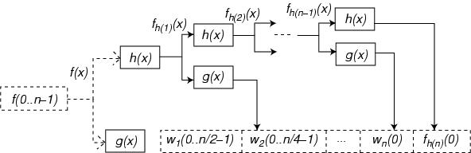

Figure 4: Forward wavelet transformation. Source data f(x) is decomposed in a series of wavelet coefficients wi(x) corresponding to fine detail at each level i. Low-pass filter output fh(i)(x) corresponds to source data representation at scale level i.
